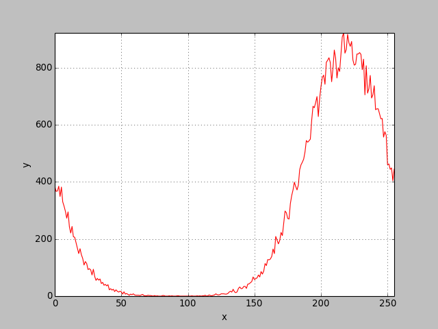

iauint8pitfalls - Erros comuns utilizando pixels do tipo uint8
Em processamento de imagens é comum que tanto a leitura de imagens, pelo adread ou adreadgray o tipo do pixel do array Numpy seja do tipo uint8, isto é, um byte (oito bits) sem sinal. Este tipo de pixel pode armazenar apenas valores entre 0 e 255.
O problema comum que acontece é que esta faixa de valores é muito pequena e não se deve fazer nenhum operação aritmética tipo soma, subtração, multiplicação ou divisão com este valor, pois a possibilidade do resultado ficar negativo ou acima de 255 é muito grande.
Se o valor fica acima de 255, ele estoura (overflow) e passa ao valor zero e diante, assim, 255 + 1 = 0:
1 import ia636 as ia
2 f = array([0, 100, 255], uint8)
3 print 'f=',f
4 print 'f+1=', f+1
f= [ 0 100 255] f+1= [ 1 101 0]
O mesmo acontece se o valor passa para negativo, 0 - 1 = 255:
Soma com imagens to tipo uint8
Veja este tipo de erro comum, quando queremos fazer uma combinação entre duas imagens calculando sua média pela expressão . Observe que é possível fazer estas operações de soma e divisão com o tipo uint8, entretanto os resultados são errados e não existe nenhuma mensagem de aviso. Observe que o correto é converter cada imagem para o tipo inteiro (usando f.astype(int)) de modo que não aconteça estouro (overflow) na soma. Abaixo é uma ilustração mostrando o caso da operação com uint8 e depois a operação correta, convertendo para int.
1 f1 = adreadgray('tplayer1.tif')
2 f2 = adreadgray('tplayer3.tif')
3 print 'pixel data type of f1:', f1.dtype
4 print 'pixel data type of f2:', f2.dtype
5 g = (f1 + f2)/2
6 adshow(f1, 'f1: tplayer1')
7 adshow(f2, 'f2: tplayer3')
8 adshow(g, 'média com estouro: (f1+f2)/2')
9 g1 = (f1.astype(int) + f2.astype(int))/2
10 adshow(g1, 'média correta: (f1.astype(int) + f2.astype(int))/2')
pixel data type of f1: uint8 pixel data type of f2: uint8
|
f1: tplayer1 |

f2: tplayer3 |
|
média com estouro: (f1+f2)/2 |
média correta: (f1.astype(int) + f2.astype(int))/2 |
Subtração com imagens to tipo uint8
O mesmo problema acontece com a operação de subtração. Neste exemplo abaixo, estamos subtraindo as duas imagens tiradas em instantes de tempo distintas para realçar os locais de movimento. Quando a imagem uint8 é subtraída, valores negativos são passados para positivos próximos de 255, dando resultados totalmente errados. Note que quando o abs (valor absoluto) é aplicado para converter os valores negativos, os dados já estão errados. Para que o processamento seja correto, é necessário antes da subtração, converter os valores dos pixels para o tipo inteiro (f.astype(int)). Observe o exemplo a seguir:
1 diff = abs(f1 - f2)
2 adshow(diff, 'diferença com estouro: abs(f1 - f2)')
3 diff1 = abs(f1.astype(int) - f2.astype(int))
4 adshow(diff1, 'diferença correta: abs(f1.astype(int) - f2.astype(int))')
|
diferença com estouro: abs(f1 - f2) |
diferença correta: abs(f1.astype(int) - f2.astype(int)) |
Conversão de imagem ponto flutuante (float) ou inteira (int) para byte sem sinal (uint8)
Este outro exemplo, é gerada uma imagem com ruído gaussiano com média 220 e variância 30. A imagem é gerada utilizando a função normal do numpy.random. A seguir, a imagem é convertida para o tipo uint8. Nesta conversão, todos os valores acima de 255 são mapeados para a origem, pois apenas os 8 bits menos significativos da variável é utilizado. Note no histograma que a continuidade direita da forma da gaussiana acontece no início dos níveis de cinza novamente, tornando a distribuição não mais gaussiana. Observe que a estimativa feita da média e variância passou a ser 211 e 67, respectivamente. O aumento da variância é justificado pelos pixels com valores erroneamente mapeados próximos da origem.
1 import ia636 as ia
2 import numpy as np
3
4 mu, sigma = 220, 30 # mean and standard deviation
5 f = (np.random.normal(mu, sigma, (256,256))).astype('uint8')
6 adshow(f, 'random image with overflow values')
7
8 h = ia.iahistogram(f)
9 adshow( ia.iaplot(h),'Histogram')
10 print 'Imagem aleatória, média = %f, desvio padrão = %f' % (np.median(f), np.std(f))
Imagem aleatória, média = 210.000000, desvio padrão = 67.478616
|
random image with overflow values |

Histogram |
Conclusões
O tipo uint8 apesar de tão comum nas imagens devido aos dispositivos de captura e display não é apropriado para processamento. O recomendável é converter a imagem para o tipo inteiro ou mesmo float para se fazer o seu processamento.
Um truque muito comum para fazer esta conversão, sem fazer uma conversão explícita com o astype é incluir na expressão uma constante em ponto flutuante como 1.0. Neste caso a conversão de todas as variáveis na expressão fica automática para o tipo float. Veja um exemplo:

Nota:
Quando os processamentos envolvem apenas operações de máximo e mínimo, que é o que ocorre com o processamento morfológico de imagens (morfologia matemática), este cuidado não é necessário, pois operações como união, intersecção, dilatação, erosão, abertura, fechamento, entre outras, são bem especificadas e usualmente restritas os resultados das operações utilizam os pixels com valores dentro do mesmo intervalo de entrada.